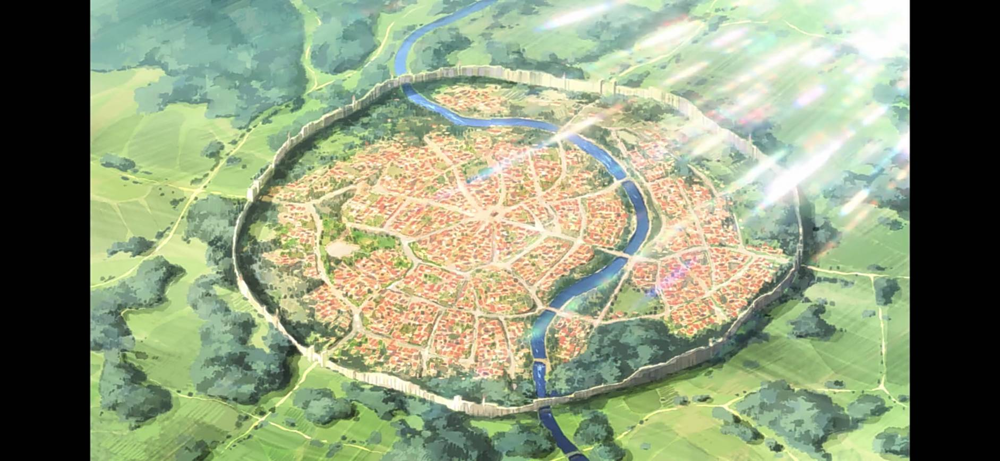
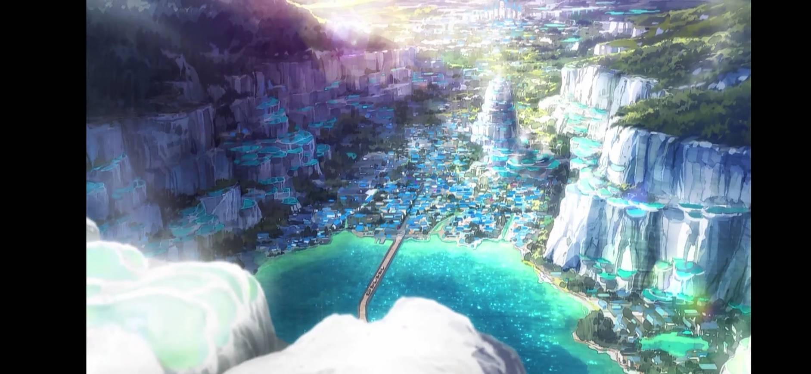
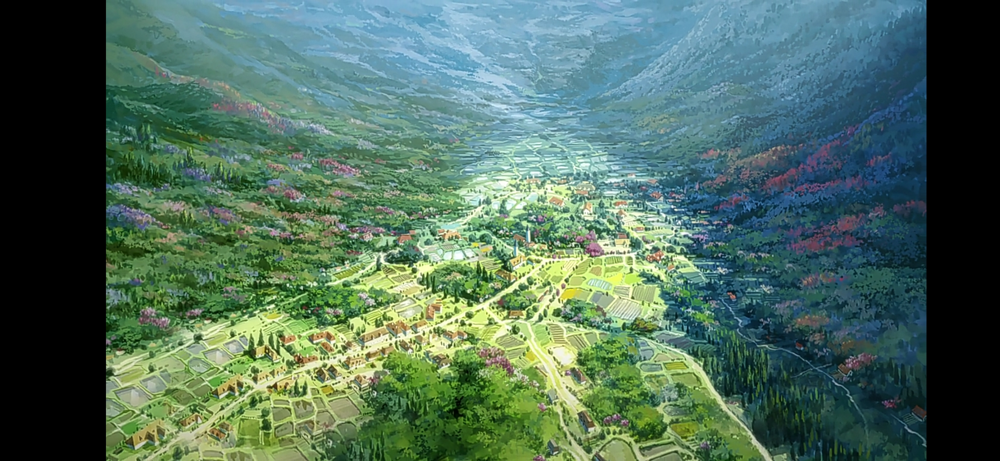
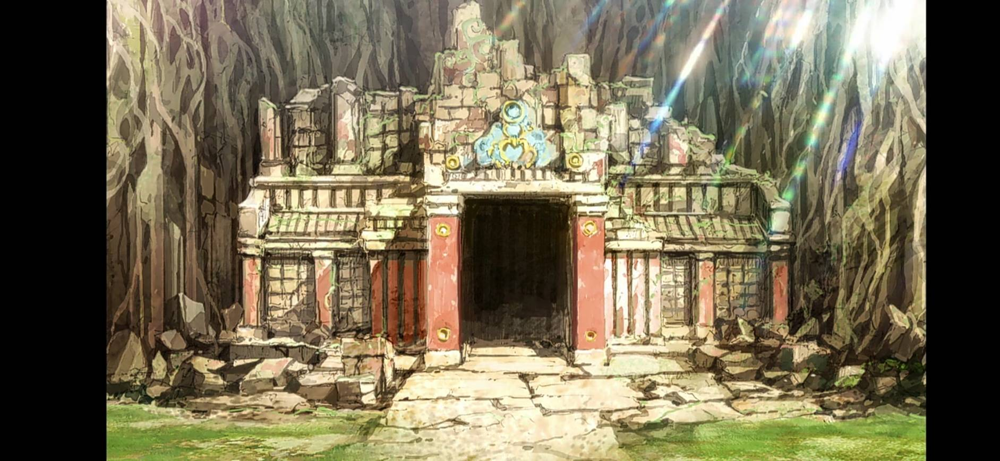

城市
貝爾澤古王國
愛麗絲公主所屬王國，也是佐藤和真等人所居住的王國。貝爾澤古王國是唯一和魔王軍領土接壤的國家，要是貝爾澤古王國敗退，防衛線被突破的話，脆弱的其他國家也會被蹂躪，因此周邊國家都會定期送來精兵增援。該國疏於經商，故經濟條件不佳，開國初期欠錢時，王族經常到其他國家幫忙打怪收錢。
阿克塞爾（アクセル，Axel）
位於貝爾澤古王國境內，新手冒險者一開始的城鎮，阿克婭與佐藤和真轉生到這個世界時就是到這個城鎮。
阿克塞爾的女性冒險者和公會職員找不到對象已經是阿克塞爾七大怪異現象之一。
治安非常好但奇怪的人非常多結果很多事大家經常都見怪不怪。
阿克塞爾的祭司們幾乎都是些賺錢至上的家夥，像埋葬了一堆窮人的公共墓地，別說祭禱，他們連靠近都不想靠近。維茲能夠聽見在現世徘徊的靈魂說話的聲音。這個公共墓地的靈魂很多都因爲沒有錢，就連像樣的喪禮都沒人幫忙辦，所以無法回歸天國，每天晚上都在墓園遊蕩。所以維茲會定期來到這裏，送那些想回歸天國的孩子們一程。
阿爾坎雷堤亞（アルカンレティア，Alcanretia）
位於貝爾澤古王國境內，由阿克西斯教徒所經營的溫泉城鎮，從阿克塞爾搭乘馬車到阿爾坎雷堤亞需時兩天。
這裏也曾經和魔王的爪牙開戰過，但是在那次戰鬥之後，他們就不曾接近過這裏，連個魔王的魔字都沒再出現。一說。是因爲這個城鎮居住著許多祭司，對於魔王軍而言是個相當不好對付的地方；二說，是因爲這個城鎮有水之女神，阿克婭女神的眷顧；再說，因爲這個城鎮住著大量的阿克西斯教徒，所以就連魔王軍的成員也都不想和他們扯上半點關係。
由於阿克婭淨化遭魔王軍幹部污染的溫泉，使得溫泉轉變成為具有治癒與撒在不死怪物身上還能發揮聖水的功效。
紅魔之里（紅魔の里）
自阿爾坎雷堤亞步行至紅魔之里需時二天，共乘馬車並沒有到紅魔之里。據說通往那裏的路程相當危險，紅魔之里的附近被高等怪物包圍，就連商隊也不會走。更何況，紅魔族的人們能靠瞬間移動魔法自由往來各個城鎮。所以，商隊也沒必要特地冒著危險前往那裏了。
紅魔之里有數個觀光據點，分別是：
1.紅魔之里入口處的獅鷲像，是用石化魔法將誤入鄉裏的獅鷲變成石頭後做成的。由於很帥氣所以就當做觀光景點留下來了，現在主要是用作約會碰頭的地方。
2.紅魔之里神社的御神體，是貓耳死庫水少女的手辦。
3.石中劍，這把劍是鐵匠大叔爲了吸引遊客做的。它被施了拔劍的人數到第一萬人的時候才能被拔出來的魔法，現在挑戰者才百人左右。拔劍前先要給鐵匠大叔交「挑戰費」，而且一人只有一次挑戰機會。
4.許願池，有個古老的傳說，如果獻上斧頭或是硬幣等貢品，就能召喚掌管金銀的女神。鐵匠大叔定期去搜刮池底，把硬幣和鐵器搜刮回去廢物利用成武器或是防具。
5.謎之設施，以前還有「封印邪神之墓碑」和「封印無名女神之地」等景點，因爲發生了一些事情，這兩者的封印都被解開了。
6.「搞不好會毀滅世界的禁忌兵器」的地下設施，也就是紅魔之里的地下倉庫，開啟地下設施的封印方法是輸入「科樂美秘技」。地下倉庫裡面存放著由機動要塞毀滅者發明人開發的「魔術師殺手」，以及一堆電視遊樂器與GAME BOY。
7.山頂上還有個展望台，那裏有超強力的望遠魔道具，連魔王城都能看到，最有人氣的監視點是魔王之女兒的房間。
8.戀人專屬的浪漫景點「魔神之丘」，傳說如果是在這個山丘上告白並結成情侶的人，會被魔神的詛咒禁錮，永遠不能分手。
9.大眾浴場「混浴溫泉」，村裏的觀光客專用設施之一，來到這裏的旅客肯定會去那個澡堂一次。據佐藤和真表示，既不是混浴，也不是溫泉。「魅魔內衣酒店」，既沒有魅魔，也沒有隻穿著內衣的店員。
貝爾澤古王都
王國首都，經常受到魔王軍攻擊。
貝爾澤古王都要塞
距王都兩天徒步路程，路途中間有溫泉休息站。要塞規模不下於王都，在與邪神沃芭克激戰中外牆幾乎被爆裂魔法打垮。
基爾的地下城（キールダンジョン）
在阿克賽爾附近，由大魔法師基爾所建立，是一個新手取向的地下城。